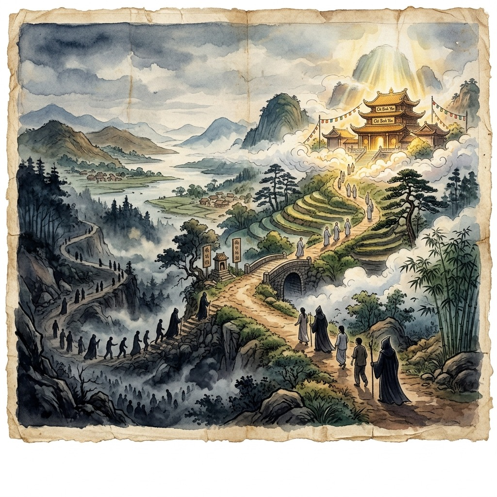
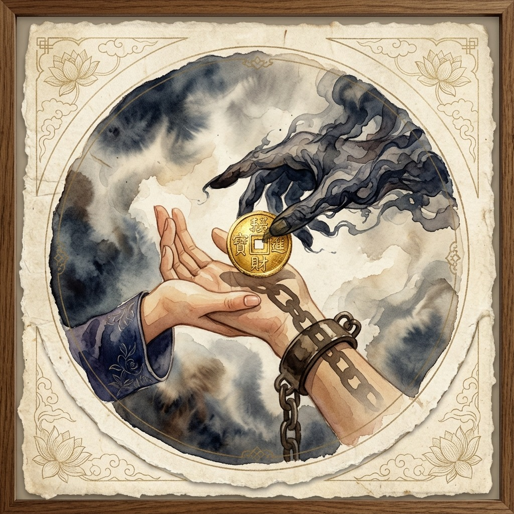
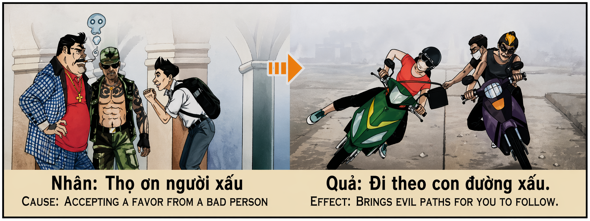

El Favor de la Sombra Shadow's Favor Il favore dell'ombra 暗影的青睐 فضل الظل Благосклонность Тени Gunst des Schattens Faveur de l'Ombre シャドウの好意 Favor da Sombra Sự ủng hộ của Shadow
"Quien acepta el favor de manos manchadas, no recibe un regalo, sino una cadena invisible que tarde o temprano lo arrastrará al mismo abismo." "Whoever accepts the favor of stained hands does not receive a gift, but rather an invisible chain that sooner or later will drag him to the same abyss." "Chi accetta il favore delle mani macchiate non riceve un dono, ma piuttosto una catena invisibile che prima o poi lo trascinerà nello stesso abisso." “接受沾污之手恩惠的人，得到的并不是一份礼物，而是一条无形的锁链，迟早会把他拖向同样的深渊。” "من يقبل فضل الأيدي الملطخة لا ينال هدية، بل سلسلة غير مرئية ستجره عاجلاً أم آجلاً إلى نفس الهاوية." «Кто примет благосклонность испачканных рук, тот получает не подарок, а невидимую цепь, которая рано или поздно увлечет его в ту же пропасть.». „Wer die Gunst der befleckten Hände annimmt, erhält kein Geschenk, sondern eine unsichtbare Kette, die ihn früher oder später in denselben Abgrund ziehen wird.“ « Celui qui accepte la faveur des mains tachées ne reçoit pas un cadeau, mais plutôt une chaîne invisible qui, tôt ou tard, l'entraînera vers le même abîme. » 「汚れた手の好意を受け入れる者は贈り物を受け取るのではなく、遅かれ早かれ同じ深淵に引きずり込まれる目に見えない鎖を受け取ります。」 "Quem aceita o favor das mãos manchadas não recebe um presente, mas sim uma corrente invisível que mais cedo ou mais tarde o arrastará para o mesmo abismo." "Ai nhận ân huệ của đôi tay vấy bẩn thì không nhận được một món quà mà thay vào đó là một sợi dây xích vô hình, sớm muộn gì cũng sẽ kéo người đó xuống vực thẳm tương tự."
En el tejido invisible del karma, existe una trampa sutil y devastadora en la que caen incluso las almas bienintencionadas: aceptar favores de aquellos que operan en las sombras. El favor del impío, del corrupto o del delincuente nunca es gratuito; es una transacción espiritual. Cuando recibimos dinero, protección, empleo o privilegios de manos cuya procedencia está manchada por la codicia o el sufrimiento ajeno, no estamos recibiendo auxilio, sino firmando un pacto kármico. La deuda moral creada en el plano físico se convierte en un grillete en el plano espiritual.
¿Por qué esta causa tiene un efecto tan implacable? Porque el mal no regala nada; el mal invierte. Al aceptar la ayuda fácil de una persona corrupta, nos colocamos voluntariamente bajo su órbita de influencia. La gratitud y la obligación moral se convierten en las cuerdas invisibles con las que el manipulador somete nuestra voluntad. Cuando llegue el momento, la sombra reclamará su pago, obligándonos a callar ante la injusticia, a colaborar en actos delictivos o a seguir el mismo sendero de autodestrucción. El alma pierde su soberanía y se ve arrastrada a un destino que no eligió.
La enseñanza fundamental de este karma es la santidad de la independencia moral. Es preferible pasar frío, hambre o estrechez antes que calentar las manos en el fuego de la iniquidad. Rechazar la ayuda del injusto es el acto supremo de preservación del alma. Quien mantiene sus manos limpias y su espíritu libre de deudas con la oscuridad, retiene la fuerza para caminar erguido y decidir su propio rumbo. La verdadera prosperidad y seguridad espiritual solo provienen de sembrar causas puras con frutos limpios.
In the invisible fabric of karma, there is a subtle and devastating trap that even well-intentioned souls fall into: accepting favors from those who operate in the shadows. The favor of the wicked, the corrupt or the criminal is never free; It is a spiritual transaction. When we receive money, protection, employment or privileges from hands whose origin is stained by the greed or suffering of others, we are not receiving help, but rather signing a karmic pact. The moral debt created on the physical plane becomes a shackle on the spiritual plane.
Why does this cause have such a relentless effect? Because evil does not give anything away; evil invests. By accepting easy help from a corrupt person, we willingly place ourselves under his orbit of influence. Gratitude and moral obligation become the invisible ropes with which the manipulator subdues our will. When the time comes, the shadow will demand its payment, forcing us to remain silent in the face of injustice, to collaborate in criminal acts or to follow the same path of self-destruction. The soul loses its sovereignty and is dragged to a destiny it did not choose.
The fundamental teaching of this karma is the sanctity of moral independence. It is preferable to suffer cold, hunger or hardship than to warm your hands in the fire of iniquity. Rejecting the help of the unjust is the supreme act of soul preservation. He who keeps his hands clean and his spirit free from debt to darkness, retains the strength to walk upright and decide his own course. True prosperity and spiritual security only come from sowing pure causes with clean fruits.
Nel tessuto invisibile del karma si nasconde una trappola sottile e devastante in cui cadono anche le anime ben intenzionate: accettare favori da coloro che operano nell'ombra. Il favore del malvagio, del corrotto o del criminale non è mai gratuito; È una transazione spirituale. Quando riceviamo denaro, protezione, lavoro o privilegi da mani la cui origine è macchiata dall'avidità o dalla sofferenza degli altri, non stiamo ricevendo aiuto, ma piuttosto stiamo firmando un patto karmico. Il debito morale creato sul piano fisico diventa un ostacolo sul piano spirituale.
Perché questa causa ha un effetto così implacabile? Perché il male non regala nulla; il male investe. Accettando il facile aiuto di una persona corrotta, ci mettiamo volontariamente sotto la sua orbita di influenza. La gratitudine e l'obbligo morale diventano le corde invisibili con cui il manipolatore sottomette la nostra volontà. Quando arriverà il momento, l’ombra esigerà il suo pagamento, costringendoci a rimanere in silenzio di fronte all’ingiustizia, a collaborare ad atti criminali o a seguire la stessa strada di autodistruzione. L'anima perde la sua sovranità e viene trascinata verso un destino che non ha scelto.
L'insegnamento fondamentale di questo karma è la santità dell'indipendenza morale. È preferibile soffrire il freddo, la fame e le difficoltà piuttosto che scaldarsi le mani nel fuoco dell'iniquità. Rifiutare l'aiuto dell'ingiusto è l'atto supremo di preservazione dell'anima. Chi mantiene le sue mani pulite e il suo spirito libero dai debiti verso le tenebre, conserva la forza per camminare in posizione eretta e decidere la propria rotta. La vera prosperità e la sicurezza spirituale provengono solo dalla semina di cause pure con frutti puri.
在看不见的业力结构中，有一个微妙而毁灭性的陷阱，即使是善意的灵魂也会陷入其中：接受那些在阴影中运作的人的恩惠。恶人、腐败者或罪犯的恩惠从来都不是免费的；这是一种精神上的交易。当我们从因他人的贪婪或痛苦而玷污的手中获得金钱、保护、就业或特权时，我们并不是在接受帮助，而是签署了一份业力契约。物质层面上产生的道德债务，成为精神层面上的枷锁。
为什么这个因会产生如此无情的影响？因为邪恶不会泄露任何东西；邪恶投资。通过接受腐败者的轻易帮助，我们心甘情愿地将自己置于他的影响之下。感恩和道德义务成为操纵者制服我们意志的无形绳索。到时候，阴影就会要求我们付出代价，迫使我们在不公正面前保持沉默，合作犯罪，或者走上自我毁灭的道路。灵魂失去了它的主权，并被拖向它没有选择的命运。
这种业力的基本教义是道德独立的神圣性。宁可忍受寒冷、饥饿或困苦，也不愿在罪孽之火中取暖。拒绝不义之人的帮助是保存灵魂的最高行为。双手洁净、精神不欠黑暗的人，就能保持直立行走、决定自己道路的力量。真正的繁荣和精神安全只能来自于播种纯洁的事业并结出洁净的果实。
في نسيج الكارما غير المرئي، هناك فخ خفي ومدمر تقع فيه حتى النفوس ذات النوايا الحسنة: قبول الخدمات من أولئك الذين يعملون في الظل. إن فضل الأشرار أو الفاسدين أو المجرمين ليس مجانيًا أبدًا؛ إنها صفقة روحية. عندما نتلقى المال أو الحماية أو التوظيف أو الامتيازات من أيدي ملطخة أصلها بجشع الآخرين أو معاناتهم، فإننا لا نتلقى المساعدة، بل نوقع ميثاقًا كرميًا. إن الدين الأخلاقي الناشئ على المستوى المادي يصبح قيداً على المستوى الروحي.
لماذا يكون لهذا السبب مثل هذا التأثير الذي لا هوادة فيه؟ لأن الشر لا يتخلى عن أي شيء؛ الشر يستثمر ومن خلال قبول المساعدة السهلة من شخص فاسد، فإننا نضع أنفسنا عن طيب خاطر تحت مدار تأثيره. يصبح الامتنان والالتزام الأخلاقي الحبال غير المرئية التي يُخضع بها المتلاعب إرادتنا. وعندما يحين الوقت، سيطالبنا الظل بدفع ثمنه، مما يجبرنا على التزام الصمت في وجه الظلم، أو التعاون في أعمال إجرامية، أو اتباع نفس طريق تدمير الذات. وتفقد النفس سيادتها وتنجرف إلى مصير لم تختره.
التعاليم الأساسية لهذه الكارما هي قدسية الاستقلال الأخلاقي. إن معاناة البرد أو الجوع أو المشقة خير من أن تدفئ يديك في نار الإثم. إن رفض مساعدة الظالمين هو العمل الأسمى لحفظ النفس. من يحفظ يديه نظيفتين وروحه خالية من الديون للظلمة، يحتفظ بالقوة للمشي باستقامة وتحديد مساره. إن الرخاء الحقيقي والأمن الروحي لا يأتي إلا من زرع الأسباب النقية بالثمار النقية.
В невидимой ткани кармы есть тонкая и разрушительная ловушка, в которую попадают даже благонамеренные души: принятие милостей от тех, кто действует в тени. Благосклонность нечестивых, коррумпированных или преступников никогда не бывает бесплатной; Это духовная сделка. Когда мы получаем деньги, защиту, работу или привилегии от рук, происхождение которых запятнано жадностью или страданиями других, мы не получаем помощи, а скорее подписываем кармический договор. Моральный долг, созданный на физическом плане, становится кандалами на духовном плане.
Почему эта причина имеет такое неумолимое воздействие? Потому что зло ничего не отдает; зло инвестирует. Принимая легкую помощь от коррумпированного человека, мы охотно попадаем в орбиту его влияния. Благодарность и моральные обязательства становятся невидимыми веревками, с помощью которых манипулятор подчиняет нашу волю. Когда придет время, тень потребует свою плату, заставляя нас молчать перед лицом несправедливости, сотрудничать в преступных действиях или идти по тому же пути самоуничтожения. Душа теряет свой суверенитет и тянется к судьбе, которую она не выбирала.
Фундаментальное учение этой кармы — святость моральной независимости. Предпочтительнее перетерпеть холод, голод или лишения, чем согреть руки в огне беззакония. Отказ от помощи несправедливых – высший акт сохранения души. Тот, кто сохраняет свои руки чистыми и свой дух свободным от долга перед тьмой, сохраняет силу идти прямо и выбирать свой собственный путь. Истинное процветание и духовная безопасность приходят только тогда, когда сеют чистые дела и чистые плоды.
Im unsichtbaren Gefüge des Karmas gibt es eine subtile und verheerende Falle, in die selbst wohlmeinende Seelen tappen: Gefälligkeiten von denen anzunehmen, die im Schatten agieren. Die Gunst der Bösen, Korrupten oder Kriminellen ist niemals umsonst; Es ist eine spirituelle Transaktion. Wenn wir Geld, Schutz, Arbeit oder Privilegien von Händen erhalten, deren Herkunft durch die Gier oder das Leid anderer befleckt ist, erhalten wir keine Hilfe, sondern unterzeichnen einen karmischen Pakt. Die auf der physischen Ebene entstandene moralische Schuld wird auf der spirituellen Ebene zu einer Fessel.
Warum hat diese Ursache eine so unerbittliche Wirkung? Weil das Böse nichts verrät; Das Böse investiert. Indem wir die einfache Hilfe einer korrupten Person annehmen, begeben wir uns bereitwillig in seinen Einflussbereich. Dankbarkeit und moralische Verpflichtung werden zu den unsichtbaren Seilen, mit denen der Manipulator unseren Willen unterwirft. Wenn die Zeit gekommen ist, wird der Schatten seine Bezahlung einfordern und uns dazu zwingen, angesichts der Ungerechtigkeit zu schweigen, uns an kriminellen Handlungen zu beteiligen oder den gleichen Weg der Selbstzerstörung zu beschreiten. Die Seele verliert ihre Souveränität und wird in ein Schicksal hineingezogen, das sie sich nicht ausgesucht hat.
Die grundlegende Lehre dieses Karma ist die Heiligkeit der moralischen Unabhängigkeit. Es ist besser, Kälte, Hunger oder Not zu erleiden, als die Hände im Feuer der Ungerechtigkeit zu wärmen. Die Ablehnung der Hilfe der Ungerechten ist der höchste Akt der Seelenerhaltung. Wer seine Hände rein und seinen Geist frei von Schulden gegenüber der Dunkelheit hält, behält die Kraft, aufrecht zu gehen und seinen eigenen Weg zu bestimmen. Wahrer Wohlstand und spirituelle Sicherheit entstehen nur durch die Aussaat reiner Ziele mit reinen Früchten.
Dans le tissu invisible du karma, il existe un piège subtil et dévastateur dans lequel tombent même les âmes bien intentionnées : accepter les faveurs de ceux qui opèrent dans l’ombre. La faveur des méchants, des corrompus ou des criminels n’est jamais gratuite ; C'est une transaction spirituelle. Lorsque nous recevons de l’argent, une protection, un emploi ou des privilèges de mains dont l’origine est entachée par l’avidité ou la souffrance d’autrui, nous ne recevons pas d’aide, mais signons plutôt un pacte karmique. La dette morale créée sur le plan physique devient une entrave sur le plan spirituel.
Pourquoi cette cause a-t-elle un effet si implacable ? Parce que le mal ne révèle rien ; le mal investit. En acceptant l’aide facile d’une personne corrompue, nous nous plaçons volontairement sous son orbite d’influence. La gratitude et l'obligation morale deviennent les cordes invisibles avec lesquelles le manipulateur soumet notre volonté. Le moment venu, l’ombre exigera son paiement, nous obligeant à garder le silence face à l’injustice, à collaborer à des actes criminels ou à suivre le même chemin d’autodestruction. L’âme perd sa souveraineté et est entraînée vers un destin qu’elle n’a pas choisi.
L'enseignement fondamental de ce karma est le caractère sacré de l'indépendance morale. Il est préférable de souffrir du froid, de la faim ou de la misère plutôt que de se réchauffer les mains dans le feu de l'iniquité. Rejeter l’aide des injustes est l’acte suprême de préservation de l’âme. Celui qui garde ses mains propres et son esprit libre de toute dette envers les ténèbres conserve la force de marcher droit et de décider de sa propre voie. La vraie prospérité et la sécurité spirituelle ne viennent qu’en semant des causes pures avec des fruits purs.
目に見えないカルマの構造には、善意の魂さえ陥る微妙で壊滅的な罠があります。それは、影で活動する人々からの好意を受け入れることです。邪悪な者、腐敗した者、犯罪者の好意は決して無償ではありません。それは精神的な取引です。私たちがお金、保護、雇用、または特権を、その起源が他者の貪欲や苦しみによって汚された手から受け取るとき、私たちは助けを受けているのではなく、むしろカルマの契約に署名しているのです。物質面で生じた道徳的負債は、霊的面では足枷となります。
なぜこの原因はこれほど容赦ない影響を与えるのでしょうか?なぜなら、悪は何も与えないからです。悪は投資する。堕落した人からの安易な援助を受け入れることによって、私たちは進んでその人の影響力の軌道下に身を置くことになります。感謝と道徳的義務は、操作者が私たちの意志を抑制する目に見えないロープになります。時が来れば、影はその代償を要求し、私たちに不正に対して沈黙を強いたり、犯罪行為に協力したり、同じ自滅の道を歩むよう強いたりするでしょう。魂は主権を失い、自らが選択しなかった運命に引きずり込まれる。
このカルマの基本的な教えは、道徳的独立の神聖さです。悪の火で手を温めるよりも、寒さや飢え、苦難に苦しむ方が好ましいのです。不当な者の助けを拒否することは、魂を守るための最高の行為です。手を清く保ち、闇の負い目から精神を解放する人は、まっすぐに歩き、自分の進む道を決める強さを保持します。真の繁栄と精神的な安全は、純粋な大義ときれいな果実を蒔くことによってのみもたらされます。
Na trama invisível do carma, existe uma armadilha sutil e devastadora na qual até as almas bem-intencionadas caem: aceitar favores daqueles que operam nas sombras. O favor dos ímpios, dos corruptos ou dos criminosos nunca é gratuito; É uma transação espiritual. Quando recebemos dinheiro, proteção, emprego ou privilégios de mãos cuja origem está manchada pela ganância ou pelo sofrimento alheio, não estamos recebendo ajuda, mas sim assinando um pacto cármico. A dívida moral criada no plano físico torna-se uma algema no plano espiritual.
Por que essa causa tem um efeito tão implacável? Porque o mal não revela nada; o mal investe. Ao aceitar a ajuda fácil de uma pessoa corrupta, colocamo-nos voluntariamente sob a sua órbita de influência. A gratidão e a obrigação moral tornam-se as cordas invisíveis com as quais o manipulador subjuga a nossa vontade. Quando chegar a hora, a sombra exigirá o seu pagamento, obrigando-nos a permanecer calados diante da injustiça, a colaborar em atos criminosos ou a seguir o mesmo caminho da autodestruição. A alma perde a sua soberania e é arrastada para um destino que não escolheu.
O ensinamento fundamental deste carma é a santidade da independência moral. É preferível sofrer frio, fome ou sofrimento do que aquecer as mãos no fogo da iniqüidade. Rejeitar a ajuda dos injustos é o ato supremo de preservação da alma. Aquele que mantém as mãos limpas e o espírito livre da dívida com as trevas, mantém a força para caminhar ereto e decidir o seu próprio caminho. A verdadeira prosperidade e segurança espiritual só vêm semeando causas puras com frutos limpos.
Trong tấm vải vô hình của nghiệp báo, có một cái bẫy tinh vi và tàn khốc mà ngay cả những linh hồn có thiện chí cũng rơi vào: nhận ân huệ từ những kẻ hoạt động trong bóng tối. Sự sủng ái của kẻ ác, kẻ tham nhũng hay tội phạm không bao giờ miễn phí; Đó là một giao dịch tâm linh. Khi chúng ta nhận được tiền bạc, sự bảo vệ, việc làm hoặc đặc quyền từ những bàn tay có nguồn gốc bị vấy bẩn bởi lòng tham hoặc sự đau khổ của người khác, chúng ta không nhận được sự giúp đỡ mà là đang ký kết một hiệp ước nghiệp báo. Món nợ đạo đức được tạo ra trên bình diện vật chất sẽ trở thành xiềng xích trên bình diện tâm linh.
Tại sao nguyên nhân này lại có tác dụng không ngừng như vậy? Bởi vì cái ác không cho đi bất cứ thứ gì; đầu tư xấu xa. Bằng cách chấp nhận sự giúp đỡ dễ dàng từ một người tham nhũng, chúng ta sẵn sàng đặt mình dưới tầm ảnh hưởng của hắn. Lòng biết ơn và nghĩa vụ đạo đức trở thành sợi dây vô hình mà kẻ thao túng dùng để khuất phục ý chí của chúng ta. Khi đến thời điểm, cái bóng sẽ đòi trả giá, buộc chúng ta phải im lặng trước sự bất công, cộng tác vào những hành vi phạm tội hoặc đi theo con đường tự hủy diệt. Linh hồn mất đi chủ quyền và bị kéo vào một số phận mà nó không lựa chọn.
Lời dạy cơ bản của nghiệp này là sự thiêng liêng của sự độc lập về mặt đạo đức. Thà chịu lạnh, đói, khó khăn còn hơn sưởi ấm đôi tay trong ngọn lửa gian ác. Từ chối sự giúp đỡ của kẻ bất công là hành động bảo tồn tâm hồn cao nhất. Người nào giữ đôi bàn tay trong sạch và tinh thần không mắc nợ bóng tối, sẽ giữ được sức mạnh để bước đi ngay thẳng và quyết định con đường của riêng mình. Sự thịnh vượng đích thực và an ninh tinh thần chỉ đến từ việc gieo trồng những nguyên nhân trong sạch bằng những quả sạch.
El Hilo de Seda Negra
The Black Silk Thread
Il filo di seta nera
黑丝线
خيط الحرير الأسود
Черная шелковая нить
Der schwarze Seidenfaden
Le fil de soie noire
黒い絹糸
O fio de seda preta
Sợi tơ đen
En los tiempos en que las colinas de Annam estaban cubiertas de niebla, vivía un joven calígrafo llamado Nam. Sus trazos eran tan finos y armónicos que decían que su pincel atrapaba el soplo del viento. Sin embargo, Nam vivía en la más extrema pobreza, cuidando a su anciana madre, que languidecía a causa de una extraña enfermedad. Las medicinas costaban más de lo que Nam ganaba en un año de arduo trabajo. Desesperado, el joven lloraba una noche bajo los sauces cuando se le acercó el señor Trịnh, el hombre más rico y temido de la comarca, cuya fortuna procedía del contrabando y de arrebatar tierras a los campesinos. "No llores, muchacho", dijo el señor Trịnh, extendiendo una pesada bolsa de oro. "Toma esto para las medicinas de tu madre. No es un préstamo, es un regalo de alguien que admira tu arte. El talento no debe sufrir". Nam, abrumado por la gratitud, cayó de rodillas, bendijo las manos del señor Trịnh y corrió a salvar a su madre.
La madre sanó y la alegría volvió al pequeño hogar. Pero la primavera pasó y, al llegar el otoño, el señor Trịnh volvió a la cabaña de Nam, no con oro, sino con un rollo de pergamino en blanco. "Nam", dijo con una sonrisa gélida, "necesito que escribas con tu hermosa caligrafía un decreto imperial. Copiarás el sello del emperador y pondrás los nombres de estas tres familias campesinas, declarando que sus tierras pertenecen ahora a mi casa". Nam retrocedió, pálido como la cera. "Señor, eso es falsificación y robo. Esas familias quedarán en la calle y morirán de hambre. No puedo hacerlo". El señor Trịnh ensombreció su mirada, y sacando de su túnica un hilo de seda negra, lo ató flojo a la muñeca de Nam. "El oro que salvó a tu madre salió de mi cofre. Su vida es mía, y tu mano también. Si te niegas, no solo irás a la prisión del emperador por aceptar el oro del contrabando, sino que tu madre morirá en el frío. ¿Es así como pagas mi generosidad?".
Atrapado por la soga invisible del favor recibido, Nam sintió que el hilo de seda negra le apretaba el alma hasta asfixiarlo. Con lágrimas de amargura y el pulso tembloroso, mojó su pincel en la tinta y falsificó las firmas. Las familias fueron despojadas de sus hogares, y el llanto de los niños desterrados perseguía a Nam en sus sueños. La culpa lo consumió día a día, marchitando su salud. Meses después, la guardia imperial descubrió el fraude y arrestó a los falsificadores. Nam fue arrojado al calabozo más profundo, condenado a cadena perpetua.
El día antes de morir en su celda húmeda, su anciana madre fue a visitarlo. Al ver a su hijo demacrado y con las manos cargadas de cadenas de hierro, la mujer lloró amargamente, tomó su rostro entre sus manos temblorosas y le dijo: "Hijo mío, hubiera preferido morir mil veces respirando el aire puro de la pobreza antes que saber que cada uno de mis alientos fue comprado con el dolor de vecinos y la esclavitud de tu alma". Nam sonrió con una inmensa tristeza, comprendiendo por fin la lección del karma. En sus últimas horas, usó un trozo de carbón del suelo de la celda para escribir en las paredes palabras de luz y perdón para los presos, limpiando con sus lágrimas la seda negra que había atado su mano. Porque el favor de la sombra es un yugo que encadena el destino del hombre.
In the days when the hills of Annam were covered in fog, there lived a young calligrapher named Nam. His strokes were so fine and harmonious that it was said that his brush caught the breath of the wind. However, Nam lived in extreme poverty, caring for his elderly mother, who was languishing due to a strange illness. The medicines cost more than Nam earned in a year of hard work. Desperate, the young man was crying one night under the willows when Mr. Trịnh, the richest and most feared man in the region, whose fortune came from smuggling and taking land from the peasants, approached him. "Don't cry, boy," said Mr. Trịnh, holding out a heavy bag of gold. "Take this for your mother's medicine. It's not a loan, it's a gift from someone who admires your art. Talent should not suffer." Nam, overcome with gratitude, fell to his knees, blessed Mr. Trịnh's hands, and ran to save his mother.
The mother healed and joy returned to the small home. But spring passed, and as autumn came, Mr. Trịnh returned to Nam's hut, not with gold, but with a blank roll of parchment. "Nam," he said with an icy smile, "I need you to write in your beautiful calligraphy an imperial decree. You will copy the emperor's seal and put the names of these three peasant families, declaring that their lands now belong to my house." Nam stepped back, pale as wax. "Sir, that is forgery and theft. Those families will be left on the streets and will die of hunger. I can't do it." Mr. Trịnh darkened his gaze, and taking a thread of black silk from his robe, he tied it loosely to Nam's wrist. "The gold that saved your mother came from my chest. Her life is mine, and so is your hand. If you refuse, not only will you go to the emperor's prison for accepting the smuggled gold, but your mother will die in the cold. Is this how you repay my generosity?"
Trapped by the invisible rope of favor received, Nam felt that the black silk thread squeezed his soul until it suffocated him. With tears of bitterness and a trembling pulse, he dipped his brush in the ink and forged the signatures. Families were stripped of their homes, and the cries of banished children haunted Nam in his dreams. Guilt consumed him day by day, withering his health. Months later, the imperial guard discovered the fraud and arrested the forgers. Nam was thrown into the deepest dungeon, sentenced to life imprisonment.
The day before he died in his damp cell, his elderly mother came to visit him. Seeing her son emaciated and with his hands loaded with iron chains, the woman wept bitterly, took his face in her trembling hands and said to him: "My son, I would have preferred to die a thousand times breathing the pure air of poverty rather than know that each of my breaths was bought with the pain of neighbors and the slavery of your soul." Nam smiled with immense sadness, finally understanding the lesson of karma. In his last hours, he used a piece of charcoal from the cell floor to write words of light and forgiveness for the prisoners on the walls, cleaning the black silk that had tied his hand with his tears. Because the favor of the shadow is a yoke that chains the destiny of man.
Nei giorni in cui le colline di Annam erano coperte di nebbia, viveva un giovane calligrafo di nome Nam. I suoi tratti erano così fini e armoniosi che si diceva che il suo pennello catturasse il soffio del vento. Tuttavia, Nam viveva in estrema povertà, prendendosi cura della sua anziana madre, che languiva a causa di una strana malattia. Le medicine costano più di quanto Nam ha guadagnato in un anno di duro lavoro. Disperato, il giovane stava piangendo una notte sotto i salici quando il signor Trịnh, l'uomo più ricco e temuto della regione, la cui fortuna proveniva dal contrabbando e dall'appropriazione di terre ai contadini, gli si avvicinò. "Non piangere, ragazzo", disse il signor Trịnh, porgendogli una pesante borsa piena d'oro. "Prendi questo come medicina per tua madre. Non è un prestito, è un regalo di qualcuno che ammira la tua arte. Il talento non dovrebbe soffrire." Nam, sopraffatto dalla gratitudine, cadde in ginocchio, benedisse le mani del signor Trịnh e corse a salvare sua madre.
La madre guarì e la gioia ritornò nella piccola casa. Ma la primavera passò e, con l'arrivo dell'autunno, il signor Trịnh tornò alla capanna di Nam, non con l'oro, ma con un rotolo di pergamena vergine. "Nam," disse con un sorriso gelido, "ho bisogno che tu scriva con la tua bella calligrafia un decreto imperiale. Copierai il sigillo dell'imperatore e metterai i nomi di queste tre famiglie di contadini, dichiarando che le loro terre ora appartengono alla mia casa." Nam fece un passo indietro, pallido come la cera. "Signore, questo è falso e furto. Quelle famiglie rimarranno per strada e moriranno di fame. Non posso farlo." Il signor Trịnh oscurò lo sguardo e, prendendo un filo di seta nera dalla sua veste, lo legò liberamente al polso di Nam. "L'oro che ha salvato tua madre è venuto dal mio petto. La sua vita è mia, così come la tua mano. Se rifiuti, non solo andrai nella prigione dell'imperatore per aver accettato l'oro di contrabbando, ma tua madre morirà al freddo. È così che ripaghi la mia generosità?"
Intrappolato dalla corda invisibile del favore ricevuto, Nam sentì che il filo di seta nera gli stringeva l'anima fino a soffocarlo. Con lacrime di amarezza e polso tremante, intinse il pennello nell'inchiostro e forgiò le firme. Le famiglie furono spogliate delle loro case e le grida dei bambini esiliati perseguitarono Nam nei suoi sogni. Il senso di colpa lo consumava giorno dopo giorno, facendo appassire la sua salute. Mesi dopo, la guardia imperiale scoprì la frode e arrestò i falsari. Nam fu gettato nella prigione più profonda, condannato all'ergastolo.
Il giorno prima di morire nella sua cella umida, la sua anziana madre venne a trovarlo. Vedendo il figlio emaciato e con le mani cariche di catene di ferro, la donna pianse amaramente, gli prese il volto tra le mani tremanti e gli disse: "Figlio mio, avrei preferito morire mille volte respirando l'aria pura della povertà piuttosto che sapere che ogni mio respiro è stato acquistato con il dolore del prossimo e con la schiavitù della tua anima". Nam sorrise con immensa tristezza, capendo finalmente la lezione del karma. Nelle sue ultime ore, utilizzò un pezzo di carbone preso dal pavimento della cella per scrivere sui muri parole di luce e di perdono per i prigionieri, pulendo con le sue lacrime la seta nera che gli aveva legato la mano. Perché il favore dell'ombra è un giogo che incatena il destino dell'uomo.
在安南山上雾蒙蒙的日子里，住着一位名叫南的年轻书法家。他的笔触如此细腻、和谐，据说他的画笔捕捉到了风的气息。然而，南先生生活在极度贫困中，需要照顾年迈的母亲，而母亲因一种奇怪的疾病而日渐衰弱。这些药品的花费比南一年辛苦工作挣的钱还要多。一天晚上，这个年轻人绝望地在柳树下哭泣，这时该地区最富有、最令人畏惧的人郑先生走近他，他的财富来自走私和从农民手中夺取土地。 “别哭，孩子，”郑先生说道，手里拿着一袋沉甸甸的金子。 “把这个当你母亲的药吧。这不是借来的，这是欣赏你艺术的人送给你的礼物。才华不应该受到影响。”南感激不尽，跪下，祝福郑先生的双手，然后跑去救他的母亲。
母亲痊愈了，小家又回到了欢乐。但春天过去了，秋天来了，郑先生回到南的小屋，带的不是金子，而是一卷空白的羊皮纸。 “南，”他冷笑道，“我要你用漂亮的书法写下一道圣旨，抄下皇帝的印章，写上这三个农户的名字，宣布他们的土地现在都属于我家了。”南向后退了一步，脸色苍白如蜡。 “先生，那是伪造和盗窃。那些家庭将流落街头，死于饥饿。我做不到。”郑先生目光阴沉，从袍子里取出一根黑丝，松松地系在南南的手腕上。 “救你母亲的金子是我胸口的，她的命是我的，你的手也是我的。如果你不肯，你不仅会因为接受走私的黄金而进天牢，你的母亲也会被冻死，这就是你报答我的恩情吗？”
被无形的恩惠之绳困住，南觉得黑色的丝线挤压着他的灵魂，直至窒息。他含着辛酸的泪水和颤抖的脉搏，将毛笔浸入墨水中，伪造了签名。一些家庭被剥夺了家园，被放逐的孩子们的哭声萦绕在南的梦中。愧疚感日复一日地吞噬着他，损害着他的健康。几个月后，禁军发现了这一骗局并逮捕了伪造者。南被投入最深的地牢，被判处无期徒刑。
在他死在潮湿的牢房里的前一天，他年迈的母亲来看望他。看着儿子瘦骨嶙峋，手上挂着铁链，女人痛哭起来，用颤抖的双手捧着他的脸，对他说：“我的孩子，我宁愿呼吸着贫穷纯净的空气而死一千次，也不愿知道我的每一次呼吸都是用邻居的痛苦和灵魂的奴役换来的。”南微笑着，带着巨大的悲伤，终于明白了业力的教训。在生命的最后几个小时里，他用牢房地板上的一块木炭在墙上写下了对囚犯的光明和宽恕的话语，并用泪水清洗了绑住他手的黑丝。因为阴影的眷顾是束缚人类命运的枷锁。
في الأيام التي كانت فيها تلال أنام مغطاة بالضباب، عاش هناك خطاط شاب اسمه نام. كانت ضرباته دقيقة ومتناغمة لدرجة أنه قيل أن فرشاته تلتقط أنفاس الريح. ومع ذلك، عاش نام في فقر مدقع، حيث كان يعتني بوالدته المسنة التي كانت تعاني بسبب مرض غريب. تكلف الأدوية أكثر مما كسبه نام خلال عام من العمل الشاق. كان الشاب اليائس يبكي ذات ليلة تحت أشجار الصفصاف عندما اقترب منه السيد ترينه، أغنى رجل وأكثرهم رعبًا في المنطقة، والذي جاءت ثروته من التهريب وأخذ الأراضي من الفلاحين. قال السيد ترينه وهو يمسك بكيس ثقيل من الذهب: «لا تبكي يا فتى». "خذ هذا من أجل دواء والدتك. إنه ليس قرضًا، إنه هدية من شخص معجب بفنك. لا ينبغي أن تعاني الموهبة." شعر نام بالامتنان، فسقط على ركبتيه، وبارك يدي السيد ترانه، وركض لإنقاذ والدته.
شفيت الأم وعادت الفرحة إلى البيت الصغير. لكن الربيع مر، ومع حلول الخريف، عاد السيد ترينه إلى كوخ نام، ليس بالذهب، بل بلفافة بيضاء من الرق. "نام،" قال بابتسامة جليدية، "أريدك أن تكتب بخطك الجميل مرسومًا إمبراطوريًا. سوف تنسخ ختم الإمبراطور وتضع أسماء عائلات الفلاحين الثلاثة هذه، معلنة أن أراضيهم الآن تنتمي إلى منزلي." تراجع نام إلى الوراء، شاحبًا كالشمع. "سيدي، هذا تزوير وسرقة. ستُترك تلك العائلات في الشوارع وستموت من الجوع. لا أستطيع أن أفعل ذلك". أغمق السيد ترانه عينيه، وأخذ خيطًا من الحرير الأسود من ثوبه، وربطه بشكل غير محكم إلى معصم نام. "الذهب الذي أنقذ والدتك جاء من صدري. حياتها ملكي، وكذلك يدك. إذا رفضت، لن تذهب فقط إلى سجن الإمبراطور لقبولك الذهب المهرب، ولكن والدتك ستموت في البرد. هل هذه هي الطريقة التي ترد بها كرمي؟"
شعر نام، وهو محاصر بحبل المعروف غير المرئي، أن خيط الحرير الأسود يضغط على روحه حتى يخنقه. وبدموع المرارة ونبض مرتعش، غمس ريشته في الحبر وقام بتزوير التوقيعات. جُرِّدت العائلات من منازلها، وطاردت صرخات الأطفال المنفيين نام في أحلامه. كان الذنب يستهلكه يومًا بعد يوم، ويدمر صحته. وبعد أشهر اكتشف الحرس الإمبراطوري الاحتيال وألقى القبض على المزورين. تم إلقاء نام في أعمق زنزانة وحكم عليه بالسجن مدى الحياة.
في اليوم السابق لوفاته في زنزانته الرطبة، جاءت والدته المسنة لزيارته. رأت المرأة ابنها هزيلًا ويداه مثقلتان بسلاسل حديدية، فبكت بمرارة، وأخذت وجهه بين يديها المرتعشتين وقالت له: "يا بني، كنت أفضل أن أموت ألف مرة وأستنشق هواء الفقر النقي على أن أعرف أن كل أنفاسي قد تم شراؤها بألم الجيران وعبودية روحك". ابتسم نام بحزن شديد، وفهم أخيرًا درس الكارما. وفي ساعاته الأخيرة، استخدم قطعة من الفحم من أرضية الزنزانة ليكتب كلمات نور ومغفرة للسجناء على الجدران، وينظف الحرير الأسود الذي ربط يده بدموعه. لأن فضل الظل هو نير يقيد مصير الإنسان.
В те дни, когда холмы Аннама были покрыты туманом, жил молодой каллиграф по имени Нам. Его мазки были настолько тонкими и гармоничными, что говорили, что его кисть ловила дыхание ветра. Однако Нам жил в крайней нищете, ухаживая за своей престарелой матерью, томившейся из-за странной болезни. Лекарства стоят больше, чем Нам заработал за год упорного труда. В отчаянии молодой человек плакал однажды ночью под ивами, когда к нему подошел г-н Трун, самый богатый и внушающий страх человек в регионе, чье состояние было получено благодаря контрабанде и отбиранию земли у крестьян. «Не плачь, мальчик», — сказал г-н Трун, протягивая тяжелый мешок с золотом. «Возьмите это как лекарство для своей матери. Это не кредит, это подарок человека, который восхищается вашим искусством. Талант не должен страдать». Нам, охваченный благодарностью, упал на колени, благословил руки господина Труна и побежал спасать свою мать.
Мать исцелилась, и в маленький дом вернулась радость. Но прошла весна, и с наступлением осени г-н Трун вернулся в хижину Нама не с золотом, а с чистым рулоном пергамента. «Нам, — сказал он с ледяной улыбкой, — мне нужно, чтобы ты написал своим прекрасным каллиграфическим письмом императорский указ. Ты скопируешь императорскую печать и поставишь имена этих трех крестьянских семей, заявив, что их земли теперь принадлежат моему дому». Нам отступил назад, бледный как воск. «Сэр, это подделка и воровство. Эти семьи останутся на улице и умрут от голода. Я не могу этого сделать». Мистер Трун затемнил взгляд и, вытащив из своей мантии нить черного шелка, свободно привязал ее к запястью Нама. «Золото, которое спасло твою мать, вышло из моего сундука. Ее жизнь принадлежит мне, как и твоя рука. Если ты откажешься, ты не только попадешь в императорскую тюрьму за то, что принял контрабандное золото, но и твоя мать умрет на холоде. Так ты отплатишь за мою щедрость?»
Охваченный невидимой веревкой полученного благосклонности, Нам почувствовал, что черная шелковая нить сжала его душу, пока не задохнулась. Со слезами горечи и дрожащим пульсом он макал кисть в чернила и подделывал подписи. Семьи лишились своих домов, а крики изгнанных детей преследовали Нама во сне. Вина поглощала его день за днём, подрывая его здоровье. Спустя несколько месяцев императорская гвардия обнаружила мошенничество и арестовала фальсификаторов. Нама бросили в самую глубокую темницу и приговорили к пожизненному заключению.
Накануне его смерти в сырой камере к нему пришла в гости пожилая мать. Увидев своего сына истощенного и с руками, закованными в железные цепи, женщина горько заплакала, взяла его лицо в свои дрожащие руки и сказала ему: «Сын мой, я бы предпочла тысячу раз умереть, вдыхая чистый воздух нищеты, чем знать, что каждый мой вздох куплен болью соседей и рабством твоей души». Нам улыбнулся с огромной грустью, наконец поняв урок кармы. В свои последние часы он использовал кусок древесного угля, добытый с пола камеры, чтобы написать на стенах слова света и прощения для заключенных, очищая своими слезами черный шелк, связавший его руку. Потому что благосклонность тени – это ярмо, сковывающее судьбу человека.
In den Tagen, als die Hügel von Annam in Nebel gehüllt waren, lebte ein junger Kalligraph namens Nam. Seine Striche waren so fein und harmonisch, dass man sagte, sein Pinsel fing den Atem des Windes ein. Nam lebte jedoch in extremer Armut und kümmerte sich um seine alte Mutter, die aufgrund einer seltsamen Krankheit dahinsiechte. Die Medikamente kosten mehr, als Nam in einem Jahr harter Arbeit verdient hat. Verzweifelt weinte der junge Mann eines Nachts unter den Weiden, als Herr Trịnh, der reichste und am meisten gefürchtete Mann der Region, dessen Vermögen durch Schmuggel und den Landraub von den Bauern entstand, auf ihn zukam. „Weine nicht, Junge“, sagte Herr Trịnh und hielt ihm einen schweren Beutel voller Gold hin. „Nimm das als Medizin für deine Mutter. Es ist kein Darlehen, es ist ein Geschenk von jemandem, der deine Kunst bewundert. Talent sollte nicht leiden.“ Von Dankbarkeit überwältigt fiel Nam auf die Knie, segnete Herrn Trịnhs Hände und rannte los, um seine Mutter zu retten.
Die Mutter wurde geheilt und die Freude kehrte in das kleine Zuhause zurück. Doch der Frühling verging und als der Herbst kam, kehrte Herr Trịnh zu Nams Hütte zurück, nicht mit Gold, sondern mit einer leeren Pergamentrolle. „Nam“, sagte er mit einem eisigen Lächeln, „ich möchte, dass du in deiner wunderschönen Kalligraphie einen kaiserlichen Erlass schreibst. Du wirst das Siegel des Kaisers kopieren und die Namen dieser drei Bauernfamilien eintragen und erklären, dass ihr Land jetzt meinem Haus gehört.“ Nam trat zurück, bleich wie Wachs. „Sir, das ist Fälschung und Diebstahl. Diese Familien werden auf der Straße zurückgelassen und verhungern. Das kann ich nicht.“ Herr Trịnh verdunkelte seinen Blick und nahm einen Faden schwarzer Seide aus seinem Gewand und band ihn locker an Nams Handgelenk. „Das Gold, das deine Mutter gerettet hat, kam aus meiner Truhe. Ihr Leben gehört mir, ebenso wie deine Hand. Wenn du dich weigerst, wirst du nicht nur ins Gefängnis des Kaisers gehen, weil du das geschmuggelte Gold angenommen hast, sondern deine Mutter wird auch in der Kälte sterben. Vergeltest du so meine Großzügigkeit?“
Gefangen im unsichtbaren Seil der empfangenen Gunst spürte Nam, wie der schwarze Seidenfaden seine Seele drückte, bis er erstickte. Mit bitteren Tränen und zitterndem Puls tauchte er seinen Pinsel in die Tinte und fälschte die Unterschriften. Familien wurden ihrer Häuser beraubt und die Schreie der verbannten Kinder verfolgten Nam in seinen Träumen. Schuldgefühle verzehrten ihn Tag für Tag und ließen seine Gesundheit verkümmern. Monate später entdeckte die kaiserliche Garde den Betrug und verhaftete die Fälscher. Nam wurde in den tiefsten Kerker geworfen und zu lebenslanger Haft verurteilt.
Am Tag bevor er in seiner feuchten Zelle starb, besuchte ihn seine alte Mutter. Als die Frau sah, wie ihr Sohn abgemagert war und seine Hände mit Eisenketten beladen waren, weinte sie bitterlich, nahm sein Gesicht in ihre zitternden Hände und sagte zu ihm: „Mein Sohn, ich wäre lieber tausendmal gestorben und hätte die reine Luft der Armut eingeatmet, als zu wissen, dass jeder meiner Atemzüge mit dem Schmerz der Nachbarn und der Sklaverei deiner Seele erkauft wurde.“ Nam lächelte mit großer Traurigkeit, als er endlich die Lektion des Karma verstand. In seinen letzten Stunden schrieb er mit einem Stück Holzkohle vom Zellenboden Worte des Lichts und der Vergebung für die Gefangenen an die Wände und reinigte die schwarze Seide, die seine Hand mit seinen Tränen gefesselt hatte. Denn die Gunst des Schattens ist ein Joch, das das Schicksal des Menschen fesselt.
À l'époque où les collines de l'Annam étaient couvertes de brouillard, vivait un jeune calligraphe nommé Nam. Ses traits étaient si fins et harmonieux qu'on disait que son pinceau captait le souffle du vent. Cependant, Nam vivait dans une extrême pauvreté, prenant soin de sa mère âgée, qui languissait à cause d'une étrange maladie. Les médicaments coûtent plus cher que ce que Nam a gagné en une année de dur labeur. Désespéré, le jeune homme pleurait une nuit sous les saules lorsque M. Trịnh, l'homme le plus riche et le plus redouté de la région, dont la fortune provenait de la contrebande et de la prise de terres aux paysans, s'approcha de lui. "Ne pleure pas, mon garçon", dit M. Trịnh en tendant un lourd sac d'or. "Prenez ceci pour les médicaments de votre mère. Ce n'est pas un prêt, c'est un cadeau de quelqu'un qui admire votre art. Le talent ne devrait pas en souffrir." Nam, submergé de gratitude, tomba à genoux, bénit les mains de M. Trịnh et courut pour sauver sa mère.
La mère a guéri et la joie est revenue dans la petite maison. Mais le printemps passa et, à l'arrivée de l'automne, M. Trịnh revint à la hutte de Nam, non pas avec de l'or, mais avec un rouleau de parchemin vierge. « Nam, » dit-il avec un sourire glacial, « j'ai besoin que tu écrives dans ta belle calligraphie un décret impérial. Tu copieras le sceau de l'empereur et tu mettras les noms de ces trois familles paysannes, déclarant que leurs terres appartiennent désormais à ma maison. Nam recula, pâle comme de la cire. "Monsieur, c'est de la contrefaçon et du vol. Ces familles seront abandonnées dans la rue et mourront de faim. Je ne peux pas le faire." M. Trịnh assombrit son regard et, sortant un fil de soie noire de sa robe, il l'attacha sans serrer au poignet de Nam. "L'or qui a sauvé ta mère est sorti de ma poitrine. Sa vie est à moi, tout comme ta main. Si tu refuses, non seulement tu iras à la prison de l'empereur pour avoir accepté l'or de contrebande, mais ta mère mourra dans le froid. Est-ce ainsi que tu récompenses ma générosité ?"
Piégé par la corde invisible de la faveur reçue, Nam sentit que le fil de soie noire serrait son âme jusqu'à l'étouffer. Avec des larmes d'amertume et le pouls tremblant, il trempa son pinceau dans l'encre et forgea les signatures. Les familles ont été dépouillées de leurs maisons et les cris des enfants bannis hantaient Nam dans ses rêves. La culpabilité le consumait jour après jour, flétrissant sa santé. Quelques mois plus tard, la garde impériale découvre la fraude et arrête les faussaires. Nam a été jeté dans le cachot le plus profond et condamné à la réclusion à perpétuité.
La veille de sa mort dans sa cellule humide, sa mère âgée est venue lui rendre visite. Voyant son fils émacié et les mains chargées de chaînes de fer, la femme pleura amèrement, prit son visage dans ses mains tremblantes et lui dit : "Mon fils, j'aurais préféré mourir mille fois en respirant l'air pur de la pauvreté plutôt que de savoir que chacune de mes respirations était achetée par la douleur des voisins et l'esclavage de ton âme." Nam sourit avec une immense tristesse, comprenant enfin la leçon du karma. Au cours de ses dernières heures, il a utilisé un morceau de charbon de bois trouvé sur le sol de sa cellule pour écrire sur les murs des mots de lumière et de pardon pour les prisonniers, nettoyant ainsi la soie noire qui lui avait attaché la main avec ses larmes. Car la faveur de l’ombre est un joug qui enchaîne le destin de l’homme.
安南の丘が霧に覆われていた頃、ナムという名の若い書道家が住んでいました。彼のストロークは非常に細かく調和が取れており、彼の筆は風の息を捉えたと言われています。しかし、ナムは極度の貧困の中で、奇妙な病気で衰弱していた年老いた母親の介護をしながら暮らしていました。薬代はナムさんが1年間働いて稼いだ金額よりも高かった。ある夜、絶望的な青年が柳の下で泣いていたとき、密輸と農民からの土地の収奪で富を得たこの地域で最も裕福で最も恐れられている男、トリン氏が彼に近づいてきた。 「泣かないで、坊や」トレンさんは、金の入った重い袋を差し出しながら言った。 「これをお母さんの薬として受け取ってください。これは借金ではありません。あなたの芸術を賞賛する人からの贈り物です。才能が苦しむべきではありません。」ナムさんは感謝の気持ちでいっぱいになり、ひざまずいてトリンさんの手を祝福し、母親を救うために走った。
母親は癒され、小さな家に喜びが戻りました。しかし、春が過ぎ、秋が来ると、トリン氏は金ではなく、白紙の羊皮紙を持ってナムの小屋に戻ってきました。 「ナム」と彼は冷たい笑みを浮かべて言った、「あなたの美しい書道で勅令を書いてもらいたいのです。あなたは皇帝の印章を写し、この三人の農民家族の名前を書き、彼らの土地が私の家のものであることを宣言するでしょう。」ナムは蝋のように青白く後退した。 「先生、それは偽造と窃盗です。その家族は路上に取り残され、飢えで死ぬでしょう。私にはそれはできません。」トレン氏は視線を暗くし、ローブから黒い絹の糸を取り出し、ナムさんの手首に緩く結びつけた。 「あなたのお母さんを救った黄金は私の胸から出たものです。彼女の命は私のものであり、あなたの手も同じです。もし拒否すれば、密輸された金を受け取ったとして皇帝の刑務所に送られるだけでなく、あなたのお母さんは寒さの中で死ぬでしょう。これが私の寛大さに報いる方法ですか？」
受けた恩恵という目に見えないロープに囚われ、ナムは黒い絹の糸が窒息するまで魂を締め付けるのを感じた。彼は苦い涙を流しながら脈を震わせながら、筆をインクに浸し、署名を偽造した。家族は家を奪われ、追放された子供たちの叫び声がナムの夢に取り憑いた。罪悪感が日に日に彼を蝕み、健康を蝕んでいきました。数カ月後、帝国衛兵が詐欺を発見し、偽造者を逮捕した。ナムは最深部の地下牢に放り込まれ、終身刑を宣告された。
彼が湿気の多い独房で亡くなる前日、年老いた母親が彼を訪ねてきた。やせ細り、両手に鉄の鎖をつながれた息子を見て、女性は激しく泣き、震える手で息子の顔を抱き、息子に言った、「息子よ、自分の息の一つ一つが隣人の痛みとあなたの魂の奴隷状態で買われたことを知るくらいなら、清らかな貧困の空気を吸いながら何千回でも死んだ方がよかったです。」ナムはついにカルマの教訓を理解し、計り知れない悲しみで微笑んだ。最後の数時間、彼は独房の床にあった木炭を使って囚人たちへの光と許しの言葉を壁に書き、涙で手を縛っていた黒い絹を拭きました。影の好意は人間の運命を繋ぐくびきだから。
Na época em que as colinas de Annam estavam cobertas de neblina, vivia um jovem calígrafo chamado Nam. Seus traços eram tão finos e harmoniosos que se dizia que seu pincel captava o sopro do vento. No entanto, Nam vivia em extrema pobreza, cuidando de sua mãe idosa, que definhava devido a uma doença estranha. Os medicamentos custam mais do que Nam ganhou num ano de trabalho árduo. Desesperado, o jovem chorava uma noite sob os salgueiros quando o Sr. Trịnh, o homem mais rico e temido da região, cuja fortuna vinha do contrabando e da tomada de terras dos camponeses, se aproximou dele. “Não chore, garoto”, disse o Sr. Trịnh, estendendo um pesado saco de ouro. "Leve isso como remédio para sua mãe. Não é um empréstimo, é um presente de alguém que admira sua arte. O talento não deveria sofrer." Nam, tomado de gratidão, caiu de joelhos, abençoou as mãos do Sr. Trịnh e correu para salvar sua mãe.
A mãe ficou curada e a alegria voltou para a pequena casa. Mas a primavera passou e, com a chegada do outono, o Sr. Trịnh voltou para a cabana de Nam, não com ouro, mas com um rolo de pergaminho em branco. "Nam", disse ele com um sorriso gelado, "preciso que você escreva em sua bela caligrafia um decreto imperial. Você copiará o selo do imperador e colocará os nomes dessas três famílias camponesas, declarando que suas terras agora pertencem à minha casa." Nam recuou, pálido como cera. "Senhor, isso é falsificação e roubo. Essas famílias ficarão nas ruas e morrerão de fome. Não posso fazer isso." O Sr. Trịnh escureceu o olhar e, tirando um fio de seda preta de seu manto, amarrou-o frouxamente no pulso de Nam. "O ouro que salvou sua mãe veio do meu peito. A vida dela é minha, e a sua mão também. Se você recusar, não apenas irá para a prisão do imperador por aceitar o ouro contrabandeado, mas sua mãe morrerá no frio. É assim que você retribui minha generosidade?"
Preso pela corda invisível do favor recebido, Nam sentiu que o fio de seda preta apertava sua alma até sufocá-lo. Com lágrimas de amargura e pulso trêmulo, ele mergulhou o pincel na tinta e forjou as assinaturas. Famílias foram despojadas de suas casas e os gritos das crianças banidas assombravam Nam em seus sonhos. A culpa o consumia dia após dia, minando sua saúde. Meses depois, a guarda imperial descobriu a fraude e prendeu os falsificadores. Nam foi jogado na masmorra mais profunda, condenado à prisão perpétua.
Um dia antes de morrer em sua cela úmida, sua mãe idosa veio visitá-lo. Ao ver o filho emaciado e com as mãos carregadas de correntes de ferro, a mulher chorou amargamente, segurou-lhe o rosto com as mãos trêmulas e disse-lhe: “Meu filho, eu teria preferido morrer mil vezes respirando o ar puro da pobreza a saber que cada um dos meus suspiros foi comprado com a dor dos vizinhos e a escravidão da sua alma”. Nam sorriu com imensa tristeza, finalmente entendendo a lição do carma. Nas últimas horas, usou um pedaço de carvão do chão da cela para escrever nas paredes palavras de luz e perdão aos presos, limpando com as lágrimas a seda preta que amarrava sua mão. Porque o favor da sombra é um jugo que acorrenta o destino do homem.
Vào những ngày đồi núi An Nam chìm trong sương mù, có một nhà thư pháp trẻ tên Nam. Những nét vẽ của ông rất đẹp và hài hòa đến nỗi người ta nói rằng nét vẽ của ông đã đón lấy hơi thở của gió. Tuy nhiên, Nam sống trong cảnh nghèo khó cùng cực, phải chăm sóc mẹ già đang mòn mỏi vì một căn bệnh lạ. Thuốc men đắt hơn số tiền Nam kiếm được sau một năm làm việc vất vả. Tuyệt vọng, một đêm nọ, chàng trai trẻ đang khóc dưới gốc liễu thì ông Trinh, người giàu nhất và đáng sợ nhất vùng, có tài sản nhờ buôn lậu và cướp đất của nông dân, đến gần anh. “Đừng khóc con”, ông Trình vừa nói vừa đưa ra một túi vàng nặng trĩu. "Hãy lấy cái này làm thuốc của mẹ con. Không phải cho mượn, là quà của người ngưỡng mộ nghệ thuật của con. Tài năng không nên thiệt thòi." Nam vô cùng biết ơn, đã quỳ xuống, phù hộ tay ông Trịnh rồi chạy đi cứu mẹ.
Người mẹ khỏi bệnh và niềm vui trở lại với ngôi nhà nhỏ. Nhưng mùa xuân đi qua, mùa thu đến, ông Trình trở về lều Nam, không mang theo vàng mà với một cuộn giấy da trắng. “Nam,” anh ta nói với một nụ cười lạnh lùng, “Tôi cần cậu viết một sắc lệnh bằng lối thư pháp đẹp đẽ của mình. Cậu sẽ sao chép con dấu của hoàng đế và ghi tên ba gia đình nông dân này, tuyên bố rằng đất đai của họ bây giờ thuộc về nhà tôi.” Nam lùi lại, mặt tái nhợt như sáp. "Thưa ngài, đó là giả mạo và trộm cắp. Những gia đình đó sẽ bị bỏ ngoài đường và chết đói. Tôi không thể làm được." Ông Trình nheo mắt lại, lấy một sợi lụa đen trong áo choàng buộc lỏng vào cổ tay Nam. "Số vàng cứu mẹ ngươi là từ trong ngực ta mà ra. Mạng sống của bà ấy là của ta, bàn tay của ngươi cũng vậy. Nếu từ chối, ngươi không những sẽ phải vào ngục hoàng đế vì nhận số vàng lậu mà mẹ ngươi sẽ chết lạnh. Đây là cách ngươi báo đáp sự hào phóng của ta sao?"
Bị mắc kẹt trong sợi dây ân huệ vô hình nhận được, Nam cảm thấy sợi tơ đen siết chặt tâm hồn mình đến mức nghẹt thở. Với những giọt nước mắt cay đắng và nhịp tim run rẩy, anh ta nhúng cọ vào mực và giả mạo chữ ký. Nhiều gia đình bị tước đoạt nhà cửa, tiếng khóc của những đứa trẻ bị đày ải ám ảnh Nam trong những giấc mơ. Cảm giác tội lỗi ngày ngày tàn phá sức khỏe của ông. Nhiều tháng sau, cận vệ hoàng gia phát hiện ra vụ lừa đảo và bắt giữ những kẻ giả mạo. Nam bị tống vào ngục tối sâu nhất, bị kết án tù chung thân.
Một ngày trước khi anh chết trong phòng giam ẩm ướt, người mẹ già của anh đã đến thăm anh. Thấy con trai gầy gò, hai tay đeo xiềng xích sắt, người phụ nữ khóc lóc thảm thiết, ôm khuôn mặt con trong đôi bàn tay run rẩy và nói với con: “Con ơi, mẹ thà chết ngàn lần trong bầu không khí trong lành của nghèo khó còn hơn biết rằng mỗi hơi thở của mẹ phải mua bằng nỗi đau của hàng xóm và sự nô lệ của tâm hồn con”. Nam mỉm cười buồn bã vô cùng, cuối cùng cũng hiểu được bài học về nghiệp báo. Trong những giờ phút cuối cùng, ông đã dùng một mẩu than từ sàn phòng giam để viết lên tường những lời ánh sáng và sự tha thứ cho các tù nhân, lau sạch tấm lụa đen đã trói tay ông bằng nước mắt. Bởi sự sủng ái của bóng tối là cái ách xiềng xích số phận con người.

La Inspiración Original
The Original Inspiration

🇻🇳 Tiếng Việt (Gốc):
Nhân: Thọ ơn người xấu.
Quả: Đi theo con đường xấu.
🇪🇸 Traducción Recreada:
Causa: Aceptar favores, dinero, regalos o protección de personas corruptas o delincuentes, contrayendo una deuda moral implícita con el mal.
Efecto: Ser arrastrado involuntariamente por el camino de la delincuencia y la complicidad, perdiendo la rectitud y la libertad del alma al quedar sometido a la voluntad de la sombra.
🇬🇧 Recreated Translation:
Cause: Accepting favors, money, gifts or protection from corrupt or criminal people, contracting an implicit moral debt with evil.
Effect: Being involuntarily dragged along the path of crime and complicity, losing the righteousness and freedom of the soul by being subjected to the will of the shadow.
🇮🇹 Traduzione Ricreata:
Causa: Accettare favori, denaro, doni o protezione da persone corrotte o criminali, contrarre un implicito debito morale con il male.
Effetto: Essere trascinati involontariamente sulla via del crimine e della complicità, perdere la rettitudine e la libertà dell'anima sottomettendosi al volere dell'ombra.
🇨🇳 重建的翻译:
原因: 接受恩惠、金钱、礼物或免受腐败或犯罪分子的保护，与邪恶签订隐含的道德债务。
影响: 不由自主地被拖上了犯罪和同谋的道路，因屈服于阴影的意志而失去了灵魂的正义和自由。
🇦🇪 الترجمة المُعاد صياغتها:
سبب: قبول المعروف أو المال أو الهدايا أو الحماية من الفاسدين أو المجرمين، وعقد دين أخلاقي ضمني مع الشر.
تأثير: الانجرار قسريًا إلى طريق الجريمة والتواطؤ، وفقدان صلاح النفس وحريتها من خلال الخضوع لإرادة الظل.
🇷🇺 Воссозданный перевод:
Причина: Принятие услуг, денег, подарков или защиты от коррумпированных или преступных людей, вступление в неявный моральный долг перед злом.
Эффект: Будучи невольно втянутым на путь преступления и соучастия, теряя праведность и свободу души, подчиняясь воле тени.
🇩🇪 Rekonstruierte Übersetzung:
Ursache: Annahme von Gefälligkeiten, Geld, Geschenken oder Schutz von korrupten oder kriminellen Menschen, wodurch eine implizite moralische Verpflichtung gegenüber dem Bösen eingegangen wird.
Wirkung: Unfreiwillig auf den Weg des Verbrechens und der Komplizenschaft gezogen zu werden und die Gerechtigkeit und Freiheit der Seele zu verlieren, indem man dem Willen des Schattens unterworfen ist.
🇫🇷 Traduction Recréée:
Cause: Accepter des faveurs, de l'argent, des cadeaux ou une protection de la part de personnes corrompues ou criminelles, contracter une dette morale implicite envers le mal.
Effet: Être entraîné involontairement sur le chemin du crime et de la complicité, perdre la droiture et la liberté de l'âme en étant soumis à la volonté de l'ombre.
🇯🇵 再現された翻訳:
原因: 好意、金銭、贈り物、あるいは腐敗した人々や犯罪者からの保護を受け取り、悪と暗黙の道徳的負債を負うこと。
効果: 知らず知らずのうちに犯罪と共犯の道に引きずり込まれ、影の意志に服従して魂の正義と自由を失う。
🇵🇹 Tradução Recriada:
Causa: Aceitar favores, dinheiro, presentes ou proteção de pessoas corruptas ou criminosas, contraindo uma dívida moral implícita com o mal.
Efeito: Sendo involuntariamente arrastado pelo caminho do crime e da cumplicidade, perdendo a retidão e a liberdade da alma ao ser submetido à vontade da sombra.
🇻🇳 Bản Dịch Tái Hiện:
Nguyên nhân: Nhận ân huệ, tiền bạc, quà tặng hoặc sự bảo vệ khỏi những kẻ tham nhũng hoặc tội phạm, mắc nợ đạo đức ngầm với cái ác.
Tác dụng: Bị vô tình bị kéo vào con đường tội ác và đồng lõa, mất đi lẽ phải và sự tự do của tâm hồn do phải tuân theo ý muốn của bóng tối.
Si quieres conocer más sobre el proyecto o colaborar, accede a nuestro Linktree.